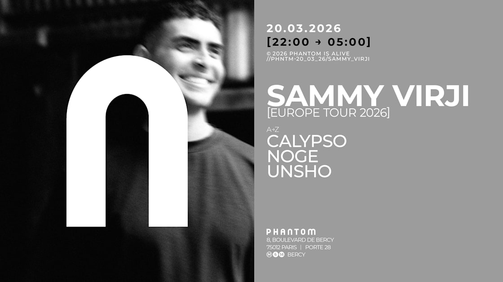

Sammy Virji — Europe Tour 2026 · Le Phantom, Paris · 20.03.2026
Le Phantom — Paris
Some venues do the work before the first BPM is even launched. Le Phantom is one of them: a Parisian XXL club holding up to 3,400 people, acoustics designed for bass, and a way of calibrating the atmosphere that immediately puts everyone in the right headspace. This Friday March 20, the lineup was tight: a warm-up before Sammy Virji took the booth at 11:30pm, then two sets to close out the night after him.
The build-up
Calypso opens. Discreet but precise — the kind of set you don't actively listen to, but which lays the foundations without you realising. The room fills slowly, conversations become rarer. The room is full. The anticipation is palpable.
11:30pm
Sammy Virji steps into the booth with the quiet ease of someone who knows exactly what they have in hand. No grand ceremony, just the first track dropping, and the room responding immediately. His sonic signature is right there: that organic rolling bass, that crossover between UK garage, broken beat and bass music that's entirely his own.
The set rises in stages, tracks flowing with a coherence that betrays hours of preparation behind an apparent fluidity. And then, somewhere in the second hour, Nostalgia.
«Nostalgia» in that context, in that room, at that hour — it's the kind of moment you look for in clubs and don't find on every night out.
The track, already powerful in recording, takes on another dimension live. The melody opening up, the bass swelling, the whole room knowing it by heart and living it differently that night. We won't pretend our eyes didn't shine.
The closing arrives with "If U Need It" — an almost obvious choice for the ending, yet perfectly executed. The kind of track that brings everyone back to the same place, erasing the barriers between those who've been there since the start and those who joined midway. The room leaves this night with something.
Sammy Virji @ Le Phantom, Paris — 20.03.2026 · Filmed by Phat & Phurious FM
After Sammy
Unsho takes over: an artist we know and follow closely here at Phat & Phurious — he confirms in the club what he announces in the studio, a selection with edge, a reading of the dancefloor that leaves nothing to chance. Noge closes the night, a final release of pressure, the sound stretching, the room gradually letting go.
What we take away
A night built with care, from start to finish. A warm-up that genuinely does its job — not always the case. And a Sammy Virji in full command, capable of holding a room over time with a sonic signature you'd recognise anywhere.
Le Phantom confirmed that night why it's among the Parisian venues where bass music sounds best. Large format, excellent sound, flawless atmosphere. We'll be back.
Set highlights